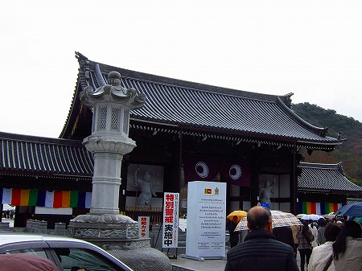
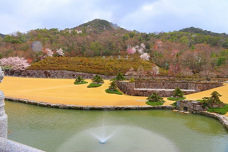
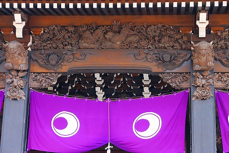

え〜と。
何処からハナシをはじめたらいいものやら…。
数年前、とある人から兵庫県の山奥に
正体不明の巨大な寺院がある、というハナシを聞いていた。
何でも入り口にコワモテのガードマンらしき人が見張っており、参拝するどころか近づくこともままならないとかただならない雰囲気だったとか。
さらにその後、このお寺に関するハナシがネット上で頻繁に流れはじめる。
山の中に正体不明の巨大な寺院がある、という事実とそれに付随する根拠の無い曖昧な噂。
古今東西のお寺を訪ね歩いており、日本中のいわゆる巨大寺院ははぼ行ったことのある小生。
しかしこのお寺は全くのノーマークだった。
その寺の名前は
無量壽寺。
お寺のサイトがあったので見てみたが、詳細は判らず、とにかく
観光寺ではない事と参拝には
事前予約が必要であることだけは判った。
グーグルマップで見てもお寺の名前すら記載されておらず（現在は記載されています)、地図にすら出ていない寺なのか！と驚いたものだ。
是非内部を見たいものだが、ネットの噂では怪しい宗教だとか書かれてるし、参拝予約とか面倒だしなあ〜、と迷っていたある日、新聞に見開き広告が掲載されたのだった。
(読売新聞2014年3月18日）
お釈迦様の真身御舎利特別御開帳とな！
あの無量壽寺総本山にどなたさまも予約ナシで拝観できますとな！
お釈迦様の御真骨も気になるが、すでにスリランカで見たし（今回日本に来たミヒンタレーのではなく
キャンディの仏歯寺の御真骨だけどね）、どっちかというとこの無量壽寺自体の方が気になり過ぎ。
コレは行くしかない！
というわけで4月。満を持して無量壽寺に向かったのであった。
JR三田駅から無料の送迎バスに揺られ1時間以上、ウトウトしかかった頃に車は無量壽寺に到着した。

生憎の雨、しかも標高が高いのだろうか、春先だというのに
恐ろしく寒い。
特別警戒実施中の看板がいやでも緊張感を高めまくり。
いよいよ謎の巨大寺院、無量壽寺の内部に潜入、なのである。
果たしてそこはネットでの噂どおり怪しい新興宗教なのだろうか？それにしては押しかけた大勢の参拝客（恐らくは教団関係者や信徒というより私同様一般の参拝客のようだ）に緊張感がないのだが…。
総門をくぐるとはるか先に山門が見える。
と☆に☆か☆く 広い！
あまりの広さに口あんぐり。
境内では屋外の撮影は許可されていたので心置きなく撮影させていただく。
山門前で係員の方が誘導していた。
それに従って進む。
いきなり手荷物検査である。
御真骨が来ているからなのか、それともこの寺院は普段からこんなに警備が厳重なのだろうか？
知人から聞いた黒服のガードマンの話がチラッと頭を過ぎる…。
セキュリティに関することなので詳細は省くが、その後順次列に並ぶ。
っとその前にトイレ、トイレ。
トイレの脇には休憩所があり、そこにはカンボジアの国王やスリランカの大統領などが来訪した時の写真などが展示されていた。
うむー。単に伽藍が立派なだけではないようだ。
各国のトップクラスの方々とぶっといコネクションをお持ちのようで…。
その事は後で述べるので今は先を急ごう。
朝一番のバスに乗って到着したものの、すでに大勢の一般参拝客が並んでいる。
参拝客は百人程度（だったと思う）のグループに分けられ、そのグループごとに集団で参拝するようになっている。
それぞれのグループに黄色い衣を着た僧侶らしき人物が引率するようだ。
改めて周囲を見渡す。
桜が満開である。
まるでこの日のために植えたのではないか、と思えるほど見事な桜。
ただでさえ浮世離れしているのに、さらに彼岸の世界っぽさが増してくる。

とはいえ、異常なほど寒いんですけどね。
そうこうしている内に第一の集団が山門に向けて歩き始めた。
我々は第二集団のようだ。山門の奥に御真骨が安置されているのであろう本堂がチラリと見える。
第一集団が山門に吸い込まれていく。
我々ももうすぐ出発のようだ。
車椅子の方なのだろうか、山門脇のスロープには別行動の人たちがいた。
そんなこんなでいよいよ御真骨に向けて出発である。
ちなみに、この大量の人をグループごとに分け、広大な敷地をシステマティックに移動させる方法は皇居で行われる
皇室の一般参賀と同じ手法である。
大勢の人を誘導させるのに一番適した方法なのだろうか。
確かに一般参賀では信じられない数の人を見事に捌いていた。
はてさてこちらの捌き具合は如何なものだろう。
山門前の橋から見えるのはこんな浮世離れした風景。

あまりにもスケールが大きくて
巨人の国に迷い込んだかのような気分になる。
移動している間、引率しているお坊さんからお寺の歴史やこの教団についての説明がなされる。
超簡単に説明するとこの無量壽寺は日本国内よりは
世界の仏教に視線を据えた寺といえよう。
カンボジアやタイ、スリランカなどの仏教国の王族や高僧、権力者の名前がポンポン出てくるあたり、日本の仏教とは一線を画したような態度が明確に感じられる。
ちなみに念佛宗の名誉総裁はカンボジアのシアヌーク前国王。
つまりネットで噂される怪しい新興宗教、というのとは違うようだ。
むしろ日本ナイズされた仏教よりも原初的な仏教、あるいは汎アジア的な仏教シーンに重点を置いた教団というか宗派なのだ。
これだけ壮大なお寺が人知れず存在するのも、秘密主義を貫いている、というよりも
観光地として人が押し寄せるのを嫌ってアピールしないから知られてないだけの話なのでは。
あ、いつものことですがもちろんここで取り上げたからといってこの教団が素晴らしい教団です皆さん入信しましょう、などとは一言も言ってませんからね。
そこんとこお間違えなく。
当サイトはあくまでも私個人が面白いと思った寺を勝手に紹介しているだけですので。
ついでに言うけどお寺に気に入られるようにおべんちゃらを使った提灯記事だけは間違っても書かないようにしてますから。
ここはあくまでも予断ナシで自分の感想だけを書いてますんでその辺、読者貴兄もお寺さんも（もし見ていたら、のハナシだが）ご理解の程よろしくお願いいたします。
まあ、少なくとも説明しているお坊さんや運営スタッフの態度からは秘密主義の特異な新興宗教でないことだけは感じられた、というハナシです。
そうこうしている内に山門に着く。
気を失いそうな組物の数。
あとでパンフを見たら
上層六手先組、下層四手先組とある。
この組物が多ければ多いほど屋根の大きさが巨大になっていくのだが、普通の仏堂建築では三手先組までしか使用しない。
三手先組でもかなり巨大だというのに、四手先の上に六手先の組物、なんて
ほぼ異次元級にデカイ建造物、ということになる。
組物の数を数えてたら目が回ってきた。
巨大な山門に比例するように山号額も大きい。5.25ｍ×3.15ｍ、
日本一の額だとか。
大きさもさることながら細かい彫刻も見ものだ。特に「三寶山」の三の字の一番上には寝釈迦さんがいたり、あちこちに仏像が彫り込まれているのが面白い。
山門の先には本堂が見えるが、今しばらく山門を見てみよう。
左右には
巨大で真っ赤な仁王サマが。
何でも中国の人間国宝クラスの人の作だとか。
うわー雪が降ってきちゃったよー。寒いなー。
仁王像以上に驚いたのが山門内部の彫刻。
巨大な山門だけに大味な造りかと思いきや、とんでもない。
コッテコテの細密彫刻に覆われてました。
獅子もこの通り。チョット尋常じゃないくらい彫り込んである。
柱の元の金具もこのコッテコテ具合。
ちなみに同行した人（建築関係者）がこのお寺の建物の金額をいちいち試算していたが、とんでもない金額をはじき出してました。
もし本当なら日本で一番金のかかっているお寺、かも…。いずれにせよ莫大な資金がこの寺院の建立には費やされているのだけは間違いない。
その資金源を詮索する由もないが…まあ、スゴイっすね。
世が世なら国家プロジェクト級の大伽藍である。
しかもこの広大な寺院に隣接してほぼ同規模の僧院を建設中だというのだから驚くほかない。
一体どうなってるんだろ。目の前で起こってる事は本当に現実なんだろか？ほっぺをつねってみるイテテテ…。
先ほどから晴れたり雨が降ったり雪が降ったり。全く目まぐるしい天候であるが気温は一貫して低い。
こうしてみると小春日和チックだが、実際には震えが止まらないほど寒かった。
さて、我々第二集団もいよいよ本堂に向かう。
参道脇には地蔵堂が。これだけでもちょっとした名刹の本堂レベルの規模なのだが、皆さん気にすることもなくスルー。
段々本堂が近づいてきた。
見事にならされた白砂利も、綺麗に刈り揃えられた芝も、絶妙に配置された庭石も、咲き誇る花も、もはや造りモノにしか見えなくなってきた。
イヤ、全部ホンモノなんですけどあまりにもこんなのが延々と続くモンで…。
五重塔に八角堂。こんなに立派な堂宇にすら不感症になってしまうほどこの寺の規模は壮大なのだよ。
鐘楼が見える。
世界最大の和鐘で重さは48ｔ。それを支える柱のぶっとい事。
あの世に向かう亡者のごとく本堂へと向かう参拝者。この階段を登りつつ精神状態がミニマルになっているのは私だけではないはず。
これまで歩いてきた参道を振り返る。
参道は1.2キロある。
そして本堂。
もう、その大きさ、組物の多さには笑うしかない。
その巨大さに圧倒されて組物の数すら数えるのも怠っていたが、パンフによると上層六手先組、下層四手先組。
一般的に世界最大の木造建築とされる奈良の東大寺大仏殿の高さが50.5ｍ。
一方この無量壽寺本堂は高さ51.5ｍ。
さらに面積で世界最大の木造建築とされる東本願寺の御影堂にも匹敵する大きさ。もちろん高さはここの本堂の方が遥かに高い。
世界最大の木造建築、ということになろう。

さっきから喉元までこみ上げてきているのを我慢していたのだが、もう限界。
ハイ、ざっくり言ってCGみたいなんです！
それだけ現実離れしてる、ということ。
この組手の多さ。
今の感覚だったらコピペしてジャンジャン増やしちゃいましょうよ、的に考えてしうが、これはリアル建築。一個一個リアルに組物を作っているのだ。
その工程を考えると気が遠くなってくる。
マジで幾らかかってるんだろう？そればかりが気になっちゃって仕方がない。
中堅どころの国の国家予算位はかかってるんだろうか。
本堂の左にあるのは釈迦堂。ちなみに右側には同じ形の観音堂がある。
本堂に比べてやや小ぶりな釈迦堂ですら巨大だった。

さらに彫り物の細かさがスゴイ。
内部は撮影できなかったのだが10ｍを越える巨大な仏像をはじめ世界各国の仏像が並び、きらびやかな世界が展開されていた。
瓦もスゴイことに。

ギネス認定の大灯篭がドーンとそびえています。
…と唐突だがここでこの寺に関するレポートは終了する。
エッ、御真骨は？本堂は？このお寺の正体は？との声も多かろうが、あまりの寒さに同行者が体調を崩し、やむなくリタイアすることになったのである。
従ってこの先をお知りになりたい方はご自身で参拝されていただきたし。
ちなみに体調を崩した同行者に対して最大限便宜を図っていただき、当人に成り代わって御礼申し上げます。
帰りは五百羅漢の石像が並ぶ
羅漢公園を通って駐車場へ。
帰りは別の門を通る。
夢のような道を通って帰るのだが、やはり鬼のように寒い。
修行不足のヘタレには参拝すらままならぬ巨大な寺院だった、ということにしておいてください…。